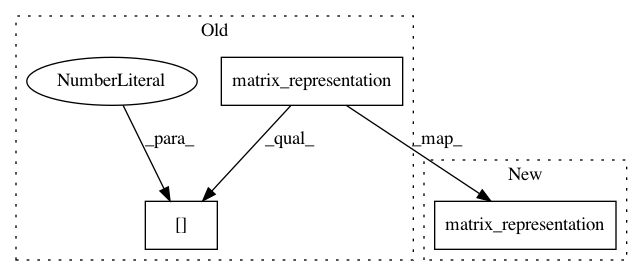

ab426036d078a0d72df4289f1c0c8a7a9e4a1192,tests/test_invariant_metric.py,TestInvariantMetric,test_inner_product_left,#TestInvariantMetric#,142
Before Change
@geomstats.tests.np_and_pytorch_only
def test_inner_product_left(self):
lie_algebra = SkewSymmetricMatrices(3)
tangent_vec_a = lie_algebra.matrix_representation([1., 0, 2.])[0]
tangent_vec_a = self.matrix_so3.compose(
self.point_1_matrix, tangent_vec_a)
tangent_vec_b = lie_algebra.matrix_representation([1., 0, 0.5])[0]
tangent_vec_b = self.matrix_so3.compose(
After Change
@geomstats.tests.np_and_pytorch_only
def test_inner_product_left(self):
lie_algebra = SkewSymmetricMatrices(3)
tangent_vec_a = lie_algebra.matrix_representation([1., 0, 2.])
tangent_vec_a = self.matrix_so3.compose(
self.point_1_matrix, tangent_vec_a)
tangent_vec_b = lie_algebra.matrix_representation([1., 0, 0.5])
tangent_vec_b = self.matrix_so3.compose(
In pattern: SUPERPATTERN
Frequency: 3
Non-data size: 3
Instances
Project Name: geomstats/geomstats
Commit Name: ab426036d078a0d72df4289f1c0c8a7a9e4a1192
Time: 2020-10-14
Author: nicolas.guigui@inria.fr
File Name: tests/test_invariant_metric.py
Class Name: TestInvariantMetric
Method Name: test_inner_product_left
Project Name: geomstats/geomstats
Commit Name: ab426036d078a0d72df4289f1c0c8a7a9e4a1192
Time: 2020-10-14
Author: nicolas.guigui@inria.fr
File Name: tests/test_invariant_metric.py
Class Name: TestInvariantMetric
Method Name: test_inner_product_at_identity
Project Name: geomstats/geomstats
Commit Name: ab426036d078a0d72df4289f1c0c8a7a9e4a1192
Time: 2020-10-14
Author: nicolas.guigui@inria.fr
File Name: tests/test_invariant_metric.py
Class Name: TestInvariantMetric
Method Name: test_inner_product_right